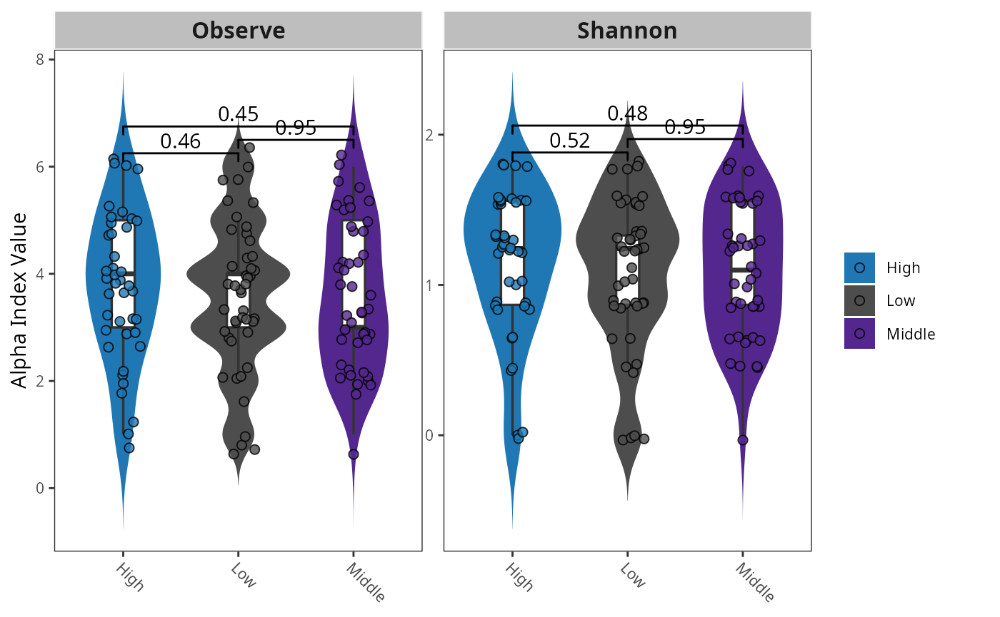
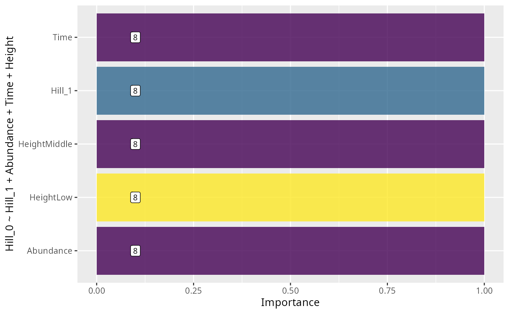
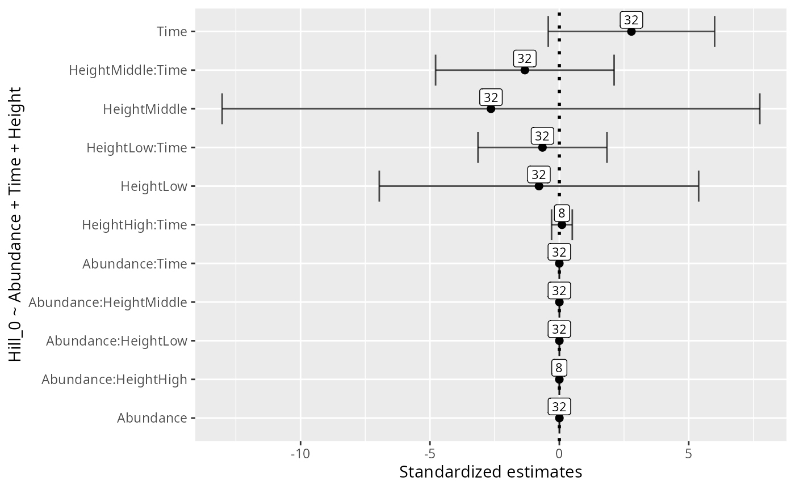
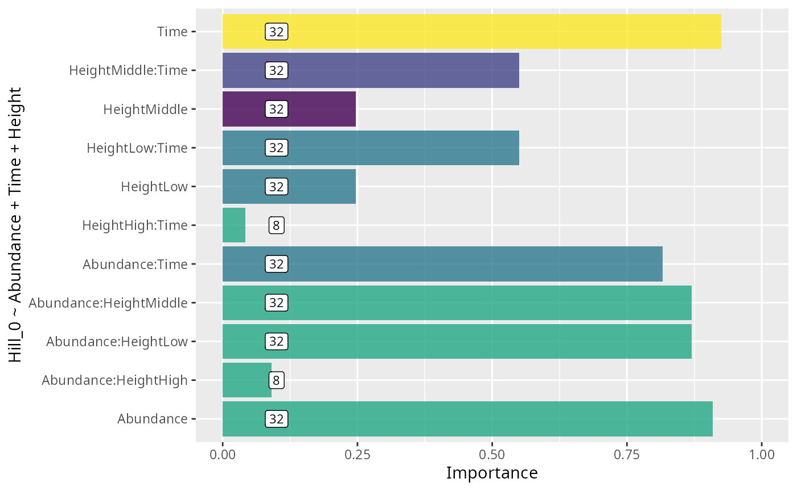

library(MiscMetabar)
data(data_fungi)Alpha diversity
Hill number
Numerous metrics of diversity exist. Hill numbers 1 is a kind of general framework for alpha diversity index.
renyi_res <- vegan::renyi(data_fungi@otu_table)
head(renyi_res)
#> 0 0.25 0.5 1 2
#> A10-005-B_S188_MERGED.fastq.gz 4.204693 3.615323 3.044244 2.0754183 1.1561862
#> A10-005-H_S189_MERGED.fastq.gz 4.248495 3.150337 2.063712 0.9938545 0.6464533
#> A10-005-M_S190_MERGED.fastq.gz 3.988984 3.607773 3.308361 2.9304156 2.5781603
#> A12-007_S191_MERGED.fastq.gz 5.036953 4.423283 3.751946 2.6309045 1.8468497
#> A12-007-B_S2_MERGED.fastq.gz 3.850148 3.349461 2.874269 2.1881145 1.6533262
#> A15-004_S3_MERGED.fastq.gz 4.025352 3.890614 3.747555 3.4533352 2.9618789
#> 4 8 16 32
#> A10-005-B_S188_MERGED.fastq.gz 0.8007816 0.6864775 0.6407124 0.6200442
#> A10-005-H_S189_MERGED.fastq.gz 0.5146170 0.4469617 0.4172228 0.4037640
#> A10-005-M_S190_MERGED.fastq.gz 2.3022639 2.1015018 1.9744485 1.9110311
#> A12-007_S191_MERGED.fastq.gz 1.5920328 1.4947479 1.4421368 1.4109287
#> A12-007-B_S2_MERGED.fastq.gz 1.3979355 1.2774402 1.2106906 1.1733049
#> A15-004_S3_MERGED.fastq.gz 2.4997916 2.2378349 2.1045646 2.0377518
#> 64 Inf
#> A10-005-B_S188_MERGED.fastq.gz 0.6102022 0.6006678
#> A10-005-H_S189_MERGED.fastq.gz 0.3973550 0.3911464
#> A10-005-M_S190_MERGED.fastq.gz 1.8806976 1.8513117
#> A12-007_S191_MERGED.fastq.gz 1.3916365 1.3700776
#> A12-007-B_S2_MERGED.fastq.gz 1.1547034 1.1366612
#> A15-004_S3_MERGED.fastq.gz 2.0054156 1.9740810Test for difference in diversity (hill number)
One way to keep into account for difference in the number of sequences per samples is to use a Tukey test on a linear model with the square roots of the number of sequence as the first explanatory variable of the linear model 2.
p <- MiscMetabar::hill_pq(data_fungi, fact = "Height")
p$plot_Hill_0
#> NULL
p$plot_tuckey
#> NULLSee also the tutorial of the microbiome package for an alternative using the non-parametric Kolmogorov-Smirnov test for two-group comparisons when there are no relevant covariates.
Alpha diversity using package MicrobiotaProcess
library("MicrobiotaProcess")
library("ggh4x")
clean_pq(subset_samples_pq(data_fungi, !is.na(data_fungi@sam_data$Height))) %>%
as.MPSE() %>%
mp_cal_alpha() %>%
mp_plot_alpha(.group = "Height")
#> Warning in wilcox.test.default(c(4, 4, 5, 5, 4, 4, 3, 6, 3, 4, 3, 2, 3, :
#> cannot compute exact p-value with ties
#> Warning in wilcox.test.default(c(3, 4, 3, 5, 4, 6, 3, 5, 4, 4, 3, 3, 3, :
#> cannot compute exact p-value with ties
#> Warning in wilcox.test.default(c(3, 4, 3, 5, 4, 6, 3, 5, 4, 4, 3, 3, 3, :
#> cannot compute exact p-value with ties
#> Warning in wilcox.test.default(c(1.32966134885476, 1.242453324894,
#> 1.56071040904141, : cannot compute exact p-value with ties
#> Warning in wilcox.test.default(c(0.867563228481461, 1.32966134885476,
#> 0.867563228481461, : cannot compute exact p-value with ties
#> Warning in wilcox.test.default(c(0.867563228481461, 1.32966134885476,
#> 0.867563228481461, : cannot compute exact p-value with ties
Effect of samples variables on alpha diversity using automated model selection and multimodel inference with (G)LMs
From the help of glmulti package :
glmulti finds what are the n best models (the confidence set of models) among all possible models (the candidate set, as specified by the user). Models are fitted with the specified fitting function (default is glm) and are ranked with the specified Information Criterion (default is aicc). The best models are found either through exhaustive screening of the candidates, or using a genetic algorithm, which allows very large candidate sets to be adressed. The output can be used for model selection, variable selection, and multimodel inference.
library("glmulti")
formula <- "Hill_0 ~ Hill_1 + Abundance + Time + Height"
res_glmulti <-
glmutli_pq(data_fungi, formula = formula, level = 1)
#> Initialization...
#> TASK: Exhaustive screening of candidate set.
#> Fitting...
#> Completed.
res_glmulti
#> estimates unconditional_interval nb_model importance
#> Hill_1 3.062117997 1.868174e-01 8 1
#> Abundance 0.002959644 8.478374e-08 8 1
#> Time 0.789091999 2.443263e-01 8 1
#> HeightLow 6.884340946 3.444196e+01 8 1
#> HeightMiddle 0.339123798 3.727962e+01 8 1
#> alpha variable
#> Hill_1 8.570200e-01 Hill_1
#> Abundance 5.773492e-04 Abundance
#> Time 9.800932e-01 Time
#> HeightLow 1.163660e+01 HeightLow
#> HeightMiddle 1.210648e+01 HeightMiddle
ggplot(data = res_glmulti, aes(x = estimates, y = variable)) +
geom_point(
size = 2,
alpha = 1,
show.legend = FALSE
) +
geom_vline(
xintercept = 0,
linetype = "dotted",
linewidth = 1
) +
geom_errorbar(
aes(xmin = estimates - alpha, xmax = estimates + alpha),
width = 0.8,
position = position_dodge(width = 0.8),
alpha = 0.7,
show.legend = FALSE
) +
geom_label(aes(label = nb_model), nudge_y = 0.3, size = 3) +
xlab("Standardized estimates") +
ylab(formula)
ggplot(data = res_glmulti, aes(
x = importance,
y = as.factor(variable),
fill = estimates
)) +
geom_bar(
stat = "identity",
show.legend = FALSE,
alpha = 0.8
) +
xlim(c(0, 1)) +
geom_label(aes(label = nb_model, x = 0.1),
size = 3,
fill = "white"
) +
scale_fill_viridis_b() +
xlab("Importance") +
ylab(formula)
formula <- "Hill_0 ~ Abundance + Time + Height"
res_glmulti_interaction <-
glmutli_pq(data_fungi, formula = formula, level = 2)
#> Initialization...
#> TASK: Exhaustive screening of candidate set.
#> Fitting...
#>
#> After 50 models:
#> Best model: Hill_0~1+Abundance+Time+Time:Abundance+Height:Abundance+Height:Time
#> Crit= 1069.11608982306
#> Mean crit= 1218.19009955263
#> Completed.
res_glmulti_interaction
#> estimates unconditional_interval nb_model importance
#> HeightHigh:Time 0.1004073616 4.167750e-02 8 0.04216251
#> Abundance:HeightHigh 0.0001609310 8.984023e-08 8 0.09020701
#> HeightLow -0.7865687564 9.769200e+00 32 0.24714664
#> HeightMiddle -2.6419930721 2.789953e+01 32 0.24714664
#> HeightLow:Time -0.6511123699 1.599292e+00 32 0.55051517
#> HeightMiddle:Time -1.3322473025 3.078720e+00 32 0.55051517
#> Abundance:Time -0.0001068559 4.586032e-09 32 0.81587143
#> Abundance:HeightLow 0.0011137659 7.957713e-07 32 0.86967993
#> Abundance:HeightMiddle 0.0017155970 1.245718e-06 32 0.86967993
#> Abundance 0.0024839088 8.790126e-07 32 0.90902176
#> Time 2.7869220741 2.663548e+00 32 0.92512111
#> alpha variable
#> HeightHigh:Time 4.006348e-01 HeightHigh:Time
#> Abundance:HeightHigh 5.877776e-04 Abundance:HeightHigh
#> HeightLow 6.171172e+00 HeightLow
#> HeightMiddle 1.038989e+01 HeightMiddle
#> HeightLow:Time 2.491898e+00 HeightLow:Time
#> HeightMiddle:Time 3.449710e+00 HeightMiddle:Time
#> Abundance:Time 1.335247e-04 Abundance:Time
#> Abundance:HeightLow 1.759641e-03 Abundance:HeightLow
#> Abundance:HeightMiddle 2.198334e-03 Abundance:HeightMiddle
#> Abundance 1.847287e-03 Abundance
#> Time 3.214276e+00 Time
ggplot(data = res_glmulti_interaction, aes(x = estimates, y = variable)) +
geom_point(
size = 2,
alpha = 1,
show.legend = FALSE
) +
geom_vline(
xintercept = 0,
linetype = "dotted",
linewidth = 1
) +
geom_errorbar(
aes(xmin = estimates - alpha, xmax = estimates + alpha),
width = 0.8,
position = position_dodge(width = 0.8),
alpha = 0.7,
show.legend = FALSE
) +
geom_label(aes(label = nb_model), nudge_y = 0.3, size = 3) +
xlab("Standardized estimates") +
ylab(formula)
ggplot(data = res_glmulti_interaction, aes(
x = importance,
y = as.factor(variable),
fill = estimates
)) +
geom_bar(
stat = "identity",
show.legend = FALSE,
alpha = 0.8
) +
xlim(c(0, 1)) +
geom_label(aes(label = nb_model, x = 0.1),
size = 3,
fill = "white"
) +
scale_fill_viridis_b() +
xlab("Importance") +
ylab(formula)
Session information
sessionInfo()
#> R version 4.3.3 (2024-02-29)
#> Platform: x86_64-pc-linux-gnu (64-bit)
#> Running under: Debian GNU/Linux 11 (bullseye)
#>
#> Matrix products: default
#> BLAS: /usr/lib/x86_64-linux-gnu/openblas-pthread/libblas.so.3
#> LAPACK: /usr/lib/x86_64-linux-gnu/openblas-pthread/libopenblasp-r0.3.13.so; LAPACK version 3.9.0
#>
#> locale:
#> [1] LC_CTYPE=fr_FR.UTF-8 LC_NUMERIC=C
#> [3] LC_TIME=fr_FR.UTF-8 LC_COLLATE=fr_FR.UTF-8
#> [5] LC_MONETARY=fr_FR.UTF-8 LC_MESSAGES=fr_FR.UTF-8
#> [7] LC_PAPER=fr_FR.UTF-8 LC_NAME=fr_FR.UTF-8
#> [9] LC_ADDRESS=fr_FR.UTF-8 LC_TELEPHONE=fr_FR.UTF-8
#> [11] LC_MEASUREMENT=fr_FR.UTF-8 LC_IDENTIFICATION=fr_FR.UTF-8
#>
#> time zone: Europe/Paris
#> tzcode source: system (glibc)
#>
#> attached base packages:
#> [1] stats graphics grDevices utils datasets methods base
#>
#> other attached packages:
#> [1] glmulti_1.0.8 leaps_3.1 rJava_1.0-11
#> [4] ggh4x_0.2.8 MicrobiotaProcess_1.14.1 MiscMetabar_0.9.2
#> [7] purrr_1.0.2 dplyr_1.1.4 dada2_1.30.0
#> [10] Rcpp_1.0.12 ggplot2_3.5.1 phyloseq_1.46.0
#>
#> loaded via a namespace (and not attached):
#> [1] libcoin_1.0-10 RColorBrewer_1.1-3
#> [3] rstudioapi_0.16.0 jsonlite_1.8.8
#> [5] magrittr_2.0.3 TH.data_1.1-2
#> [7] modeltools_0.2-23 farver_2.1.2
#> [9] rmarkdown_2.26 fs_1.6.4
#> [11] zlibbioc_1.48.2 ragg_1.3.1
#> [13] vctrs_0.6.5 multtest_2.58.0
#> [15] memoise_2.0.1 Rsamtools_2.18.0
#> [17] RCurl_1.98-1.14 ggtree_3.10.1
#> [19] htmltools_0.5.8.1 S4Arrays_1.2.1
#> [21] Rhdf5lib_1.24.2 gridGraphics_0.5-1
#> [23] SparseArray_1.2.4 rhdf5_2.46.1
#> [25] sass_0.4.9 bslib_0.7.0
#> [27] htmlwidgets_1.6.4 desc_1.4.3
#> [29] plyr_1.8.9 sandwich_3.1-0
#> [31] zoo_1.8-12 cachem_1.0.8
#> [33] GenomicAlignments_1.38.2 igraph_2.0.3
#> [35] lifecycle_1.0.4 iterators_1.0.14
#> [37] pkgconfig_2.0.3 Matrix_1.6-5
#> [39] R6_2.5.1 fastmap_1.1.1
#> [41] GenomeInfoDbData_1.2.11 MatrixGenerics_1.14.0
#> [43] aplot_0.2.2 digest_0.6.35
#> [45] ggnewscale_0.4.10 colorspace_2.1-0
#> [47] ShortRead_1.60.0 patchwork_1.2.0
#> [49] S4Vectors_0.40.2 textshaping_0.3.7
#> [51] GenomicRanges_1.54.1 hwriter_1.3.2.1
#> [53] vegan_2.6-4 labeling_0.4.3
#> [55] fansi_1.0.6 abind_1.4-5
#> [57] mgcv_1.9-1 compiler_4.3.3
#> [59] withr_3.0.0 BiocParallel_1.36.0
#> [61] highr_0.10 ggsignif_0.6.4
#> [63] MASS_7.3-60.0.1 DelayedArray_0.28.0
#> [65] biomformat_1.30.0 permute_0.9-7
#> [67] tools_4.3.3 ape_5.8
#> [69] glue_1.7.0 nlme_3.1-164
#> [71] rhdf5filters_1.14.1 grid_4.3.3
#> [73] cluster_2.1.6 reshape2_1.4.4
#> [75] ade4_1.7-22 generics_0.1.3
#> [77] gtable_0.3.5 tidyr_1.3.1
#> [79] data.table_1.15.4 coin_1.4-3
#> [81] utf8_1.2.4 XVector_0.42.0
#> [83] BiocGenerics_0.48.1 ggrepel_0.9.5
#> [85] foreach_1.5.2 pillar_1.9.0
#> [87] stringr_1.5.1 yulab.utils_0.1.4
#> [89] splines_4.3.3 gghalves_0.1.4
#> [91] treeio_1.26.0 lattice_0.22-6
#> [93] survival_3.6-4 deldir_2.0-4
#> [95] tidyselect_1.2.1 Biostrings_2.70.3
#> [97] knitr_1.46 gridExtra_2.3
#> [99] IRanges_2.36.0 SummarizedExperiment_1.32.0
#> [101] ggtreeExtra_1.12.0 stats4_4.3.3
#> [103] xfun_0.43 Biobase_2.62.0
#> [105] matrixStats_1.3.0 stringi_1.8.4
#> [107] lazyeval_0.2.2 ggfun_0.1.4
#> [109] yaml_2.3.8 evaluate_0.23
#> [111] codetools_0.2-19 interp_1.1-6
#> [113] tibble_3.2.1 ggplotify_0.1.2
#> [115] cli_3.6.2 RcppParallel_5.1.7
#> [117] systemfonts_1.0.6 munsell_0.5.1
#> [119] jquerylib_0.1.4 GenomeInfoDb_1.38.8
#> [121] png_0.1-8 parallel_4.3.3
#> [123] pkgdown_2.0.9 latticeExtra_0.6-30
#> [125] jpeg_0.1-10 bitops_1.0-7
#> [127] ggstar_1.0.4 viridisLite_0.4.2
#> [129] mvtnorm_1.2-4 tidytree_0.4.6
#> [131] scales_1.3.0 crayon_1.5.2
#> [133] rlang_1.1.3 multcomp_1.4-25